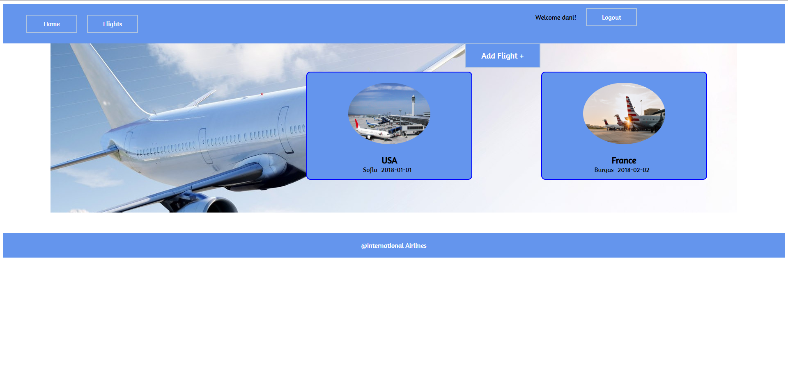

Airline Adminastrative App
A few things more...

Info
This is a airline administrative app that I had to build for an exam at Softuni. I've used JQuery and the Kinvey as a backend. The front-end is styled with just a simple css. I also used the AJAX to make requests to the Kinvey API. This app allows the user to create new flights and make them private or public. Public flights are on display for everyone to see on the main page while private are not. Every user can also check out all of the details of a flight as well as all of his flights on the profile page.